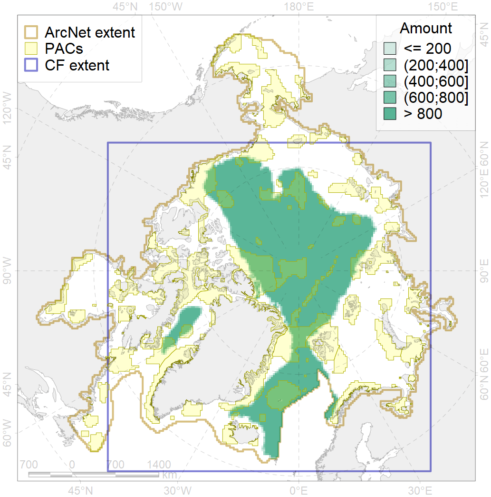
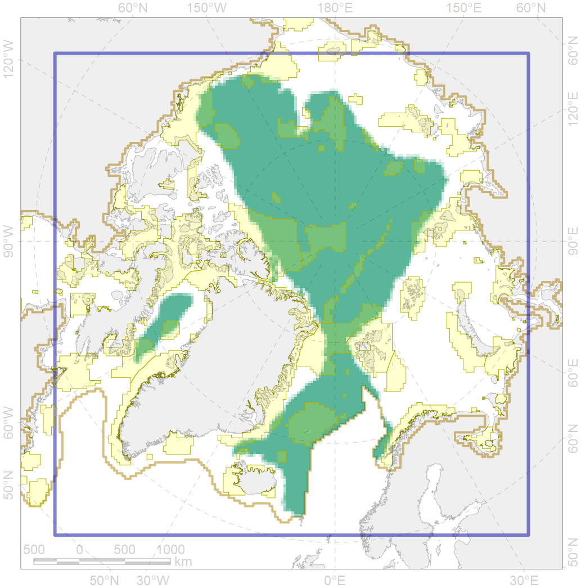

4079

| CF ID | 4079 |
| CF Name | Fish zoogeography, Arctic Region, Arctic Abyssal Province (Scandian, Central-Arctic and Baffin Deep-sea Districts ) |
| Time Period | 2019 |
| Source(s) | Chernova, produced for this project |
| Seasonality | January-December |
| Depth Horizon | |
| Methodology | expert opinion based on summarised data of trawl surveys and multiple publications |
| Author Name | N. Chernova |
| Notes | |
| Conservation Target Set in the Scenario | 0.04 |
| Conservation Target Achieved in the Scenario | 0.235 (Scenario: 586.4%) |
| PAC ID | Proportion in the PAC | Contribution to ArcNet Target Achievement | PAC’s Contribution to the Achieved Target |
|---|---|---|---|
| 14 | 0.8% | 11.8% | 2.0% |
| 27 | 0.1% | 2.0% | 0.3% |
| 28 | 1.2% | 25.4% | 4.3% |
| 29 | 2.9% | 67.7% | 11.5% |
| 30 | 0.2% | 5.6% | 1.0% |
| 32 | 0.4% | 7.8% | 1.3% |
| 33 | 0.0% | 0.1% | 0.0% |
| 34 | 3.1% | 67.5% | 11.5% |
| 35 | 0.1% | 2.4% | 0.4% |
| 36 | 0.2% | 3.7% | 0.6% |
| 37 | 0.1% | 1.0% | 0.2% |
| 45 | 0.6% | 13.4% | 2.3% |
| 46 | 0.0% | 0.0% | 0.0% |
| 47 | 0.4% | 9.3% | 1.6% |
| 54 | 4.2% | 102.4% | 17.5% |
| 55 | 2.4% | 40.3% | 6.9% |
| 56 | 0.2% | 3.0% | 0.5% |
| 57 | 2.8% | 64.8% | 11.1% |
| 58 | 0.1% | 3.2% | 0.6% |
| 59 | 1.0% | 20.0% | 3.4% |
| 60 | 0.4% | 6.8% | 1.2% |
| 62 | 1.1% | 22.4% | 3.8% |
| 82 | 0.4% | 6.2% | 1.1% |
| 83 | 0.3% | 2.4% | 0.4% |
| inner | 23.0% | 489.1% | 83.4% |
| outer | 76.7% | 97.3% | 16.6% |